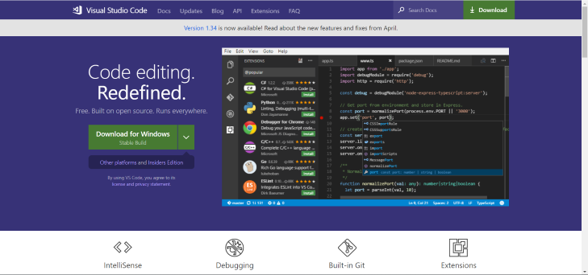
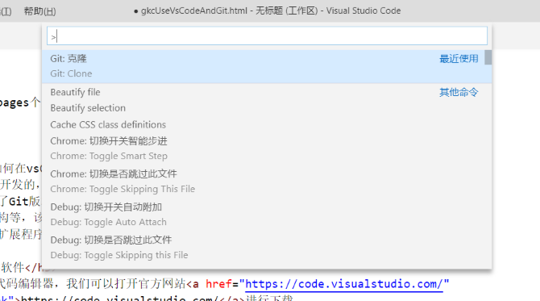
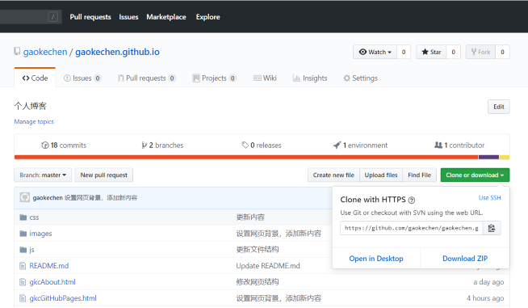
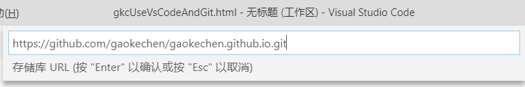
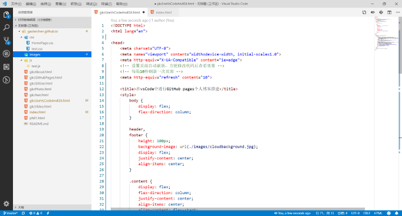
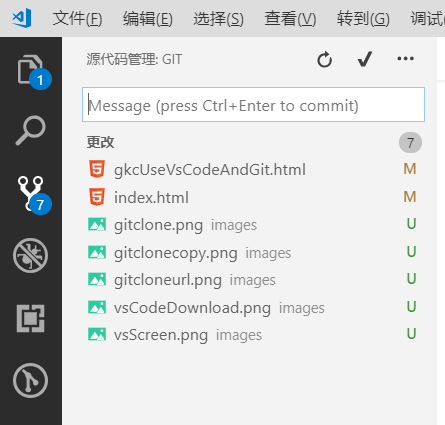

今天这篇文章教大家如何在vsCode中使用Git软件。Visual Studio Code（简称VS Code）是一个由微软开发的，同时支持Windows、Linux和macOS系统且开放源代码的代码编辑器， 它支持测试，并内置了Git版本控制功能，同时也具有开发环境功能，例如代码补全（类似于IntelliSense）、 代码片段、和代码重构等，该编辑器支持用户个性化配置，例如改变主题颜色、键盘快捷方式等各种属性和参数， 还在编辑器中内置了扩展程序管理的功能。
第一步：下载vsCode软件
vsCode是微软开发的代码编辑器，我们可以打开官方网站https://code.visualstudio.com/进行下载。 
第二步：下载配置git软件
在第一篇文章中已经介绍了git软件的安装和配置，本篇博客就不再重复介绍，具体可以参考 第一篇：在电脑上安装配置git进行git软件的安装配置。
第三步：在vsCode中使用git clone命令克隆远程仓库到本地进行修改
打开vsCode使用快捷键Ctrl+shift+p打开命令面板输入git然后选择clone
打开我们之前创建的GitHub仓库，点击Clone or download按钮复制Clone with HTTPS的链接
将复制的链接填入之前的vsCode命令框中克隆远程存储库
克隆到本地的存储库可以进行修改
第三步：提交修改到远程存储库
当我们完成了网页的修改后如何将本地写好了的html等文件提交到远程存储库中。首先点击源代码管理点击对号输入
